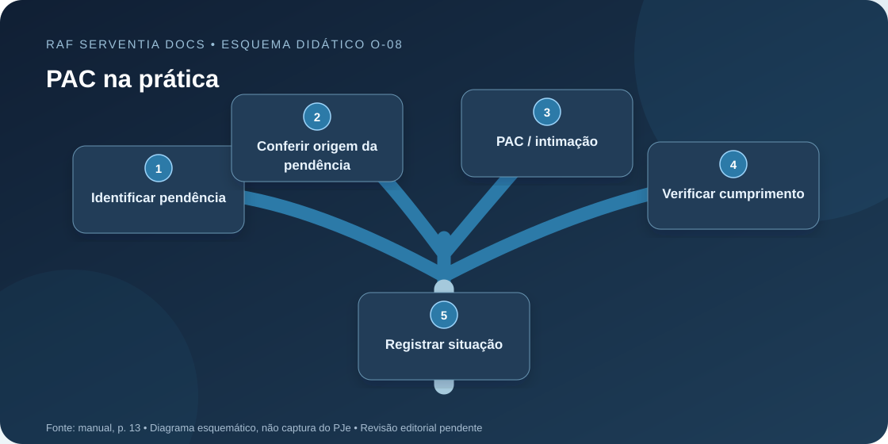
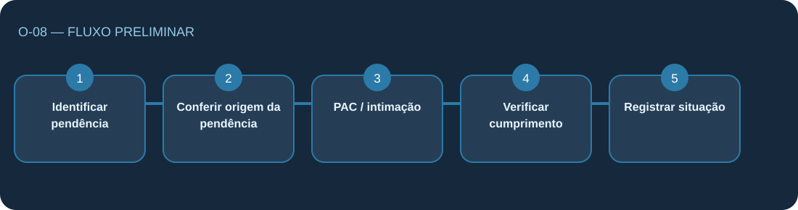

Identificar pendência
No infográfico aparecem exemplos de documento ausente ou incompleto e erro formal.
O manual apresenta o PAC como um percurso de identificação de pendência, comunicação e verificação do cumprimento. A transcrição OCR desta página contém palavras distorcidas e ainda exige conferência visual.
Ilustração vetorial original, preparada especificamente para esta ficha. Não reproduz a interface oficial do PJe.

O manual apresenta o PAC como um percurso de identificação de pendência, comunicação e verificação do cumprimento. A transcrição OCR desta página contém palavras distorcidas e ainda exige conferência visual.
Síntese de leitura provisória: confirmar rótulos e conteúdo no manual.
Selecione os elementos para ler o significado. A ordem no mapa é de apresentação didática.

Clique ou use Tab e Enter para visualizar a explicação de cada elemento. A transcrição original pode ser consultada na aba Fonte.
Os itens abaixo explicam o conteúdo da fonte. Não representam autorização para movimentar autos.
No infográfico aparecem exemplos de documento ausente ou incompleto e erro formal.
Ler o que falta nos autos, evitando concluir a partir de OCR incerto.
A página menciona PAC e intimação, mas forma e cabimento dependem de orientação da serventia.
Conferir a providência apresentada e os documentos dos autos antes de registrar conclusão.
Encaminhar dúvida ao responsável; não executar ato automaticamente por meio do portal.
Este checklist verifica a leitura do material. Não registra nenhum ato processual.
Quando houver dúvida, consultar o infográfico original e o servidor responsável.
0 de 5 itens de leitura conferidos
Não. Trata-se de uma representação didática de leitura do manual, sem conexão com o PJe.
Não. A ficha está em revisão. Use a página original e a orientação do servidor responsável para conferência.
Fonte: Manual Operacional do Estagiário na Serventia — PJe, edição de 15/10/2026, página 13.

Pág. 13 do manual — termos PAC, pendência, intimação e cumprimento. · Documento de uso originalmente classificado como restrito. Divulgação pública pelo autor; não implica homologação do TJRJ.